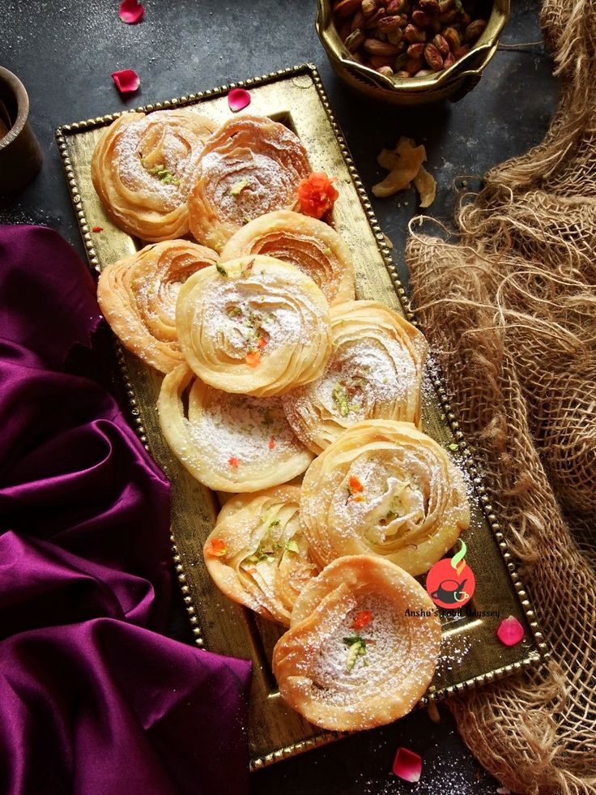

Chiroti

DESCRIPTION:
Chiroti is a delectable Indian dessert that is particularly popular in the states of Maharashtra, Karnataka, and Telangana. It is a layered pastry that is deep-fried until golden brown and crispy. The layers are created by rolling out thin sheets of dough and then layering them with a mixture of ghee and rice flour. The pastry is then rolled up tightly and cut into small pieces, which are then rolled out again and fried.
Once the chiroti is fried, it is typically sprinkled with powdered sugar and sometimes garnished with chopped nuts like almonds or cashews. In some regions, it is also served with a side of sweetened milk. Chiroti is a popular treat during festivals and special occasions like weddings. Its crispy texture and sweet flavor make it a favorite among people of all ages.
INGREDIENTS:
- For the Dough:
- 2 cups all-purpose flour (maida)
- 1/4 cup semolina (rava/sooji)
- 1/4 cup melted ghee
- Pinch of salt
- Pinch of salt
- For the Layering:
- 1/2 cup melted ghee
- 1/4 cup rice flour
- For Dusting/Syrup:
- Powdered sugar, for dusting
- OR
- 1 cup sugar
- 1/2 cup water
- Pinch of cardamom powder (optional)
- Oil, for deep frying
- Prepare the Dough:In a bowl, combine all-purpose flour, semolina, melted ghee, and salt. Mix well. Gradually add water and knead to form a smooth, soft dough. Cover and let it rest for at least 30 minutes.
- Make the Layering Paste:In a separate bowl, mix melted ghee and rice flour to form a smooth paste.
- Roll out the Dough:Divide the dough into equal portions. Roll each portion into a thin circle.
- Layer the Dough:Take one rolled circle and spread the ghee-rice flour paste evenly over it. Place another rolled circle on top of the first one. Repeat this process, layering each circle with the paste, until you have a stack of 5-6 circles.
- Roll and Cut: Tightly roll the layered dough into a cylindrical shape. Cut the cylinder into 1-inch pieces.
- Shape the Chiroti:Gently flatten each piece and roll it out into a small, thin circle.
- Fry the Chiroti:Heat oil in a deep pan or kadai. Carefully add the chiroti and fry them over medium heat until they are golden brown and crispy on both sides.
- Dust with Sugar or Dip in Syrup:Remove the fried chiroti and drain them on a paper towel. While they are still warm, either dust them generously with powdered sugar or dip them in a sugar syrup made by boiling sugar and water until a single thread consistency is reached. Add cardamom powder (if using) to the syrup.
- Serve:Let the sugar-dusted or syrup-dipped chiroti cool completely before serving.
Enjoy your crispy and delicious homemade Chiroti!